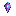
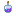

Items
Drops, crafts, and protections against the gaze.
Gaze Shard

Gaze Shard
gazesnatchers:gaze_shard — base drop & craft ingredient
Dropped by Gaze Snatchers and babies. Used to craft the amulet and draught.
Gaze Ward Amulet
Gaze Ward Amulet
gazesnatchers:gaze_ward_amulet — slows stealing while in inventory
Configurable via amuletStealReduction (default 0.55).
Gaze Draught

Gaze Draught
gazesnatchers:gaze_draught — applies Gaze Clarity
×2 Shard
+
Bottle
+
Chorus
=
Draught
Stolen items
A stolen item may show the label
%s (stolen). A random baby can carry it
after the adult dies.